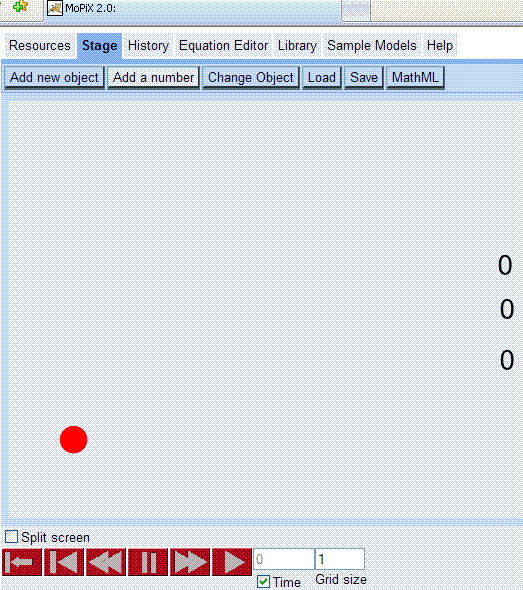
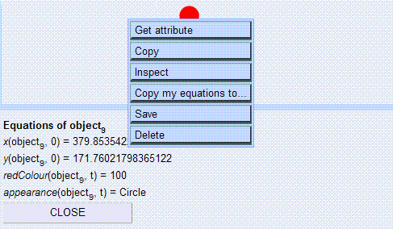
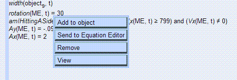

MoPiX 2.0 Environment
Tabbed environment of MoPiX 2.0
MoPiX 2.0 is an improved, web based version of the MoPiX 1.
MoPiX 2.0 Environment consists of several different parts:
- Resources - offer different information and a possibility of exploring models and equations.
- Stage - the construction and play area. Models are built and run in this part.
It is divided into two adjustable panes, left hand side for construction and running and the right hand side one for bringing/keeping and manipulating the equations.
Set of buttons on the top of the Stage controls the addition of new objects, changing an object's size, orientation and colour (in addition to the way of doing it by adding the equations onto an object) as well as loading/saving models (See Saving, Retrieving Models and Equations ) and MathML manipulation (See Viewing, Editing and Saving MathML ).
 MoPiX 2.0 Stage with loaded model
The set of commands at the bottom of the Stage controls playing and monitoring of models (See Playing Animations )
Object ManipulationDouble-click on an object on the Stage brings up a menu of options for Object Manipulation.
 Object Manipulation Menu
Equation Manipulation
Left click on an equation brings up a menu of options for Equation Manipulation. Equation Manipulation Menu
An equation can be added to an object, sent to the Equation Editor (See about Equation Editor ) removed from the Stage or object and viewed in different formats.
- History - keeps a list of all the moves.
- Equation Editor - the Editor for creating, opening and editing equations. See about Equation Editor
- Library - it is a set of equations based upon MoPiX 1 library. Consists of different sections of equations grouped on their functionality basis: controlling the appearance, position, orientation, size, colour, and trail of the objects.
- Sample models - a set of models for the off line use.